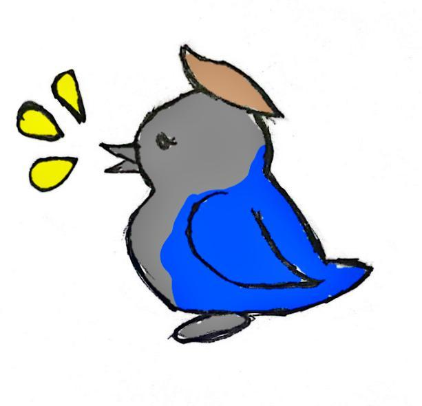

O que é o projeto?
O projeto Integra Leitura vem sendo desenvolvido com base nas ODSs 4, 10 e 16, visando incluir e ajudar pessoas com deficiencias a serem incluidas na sociedade. A plataforma traz, de forma real e interativa, assuntos essenciais para a vivência nas fases que se encontram, indo desde crianças e adolescentes ainda em escolas, até pessoas mais velhas que não terminaram o ensino.
Sendo desenvolvido pelas estudantes Mariane e Larissa, do terceiro ano A da Escola Marista Social Irmão Acácio, estão sendo adicionados elementos baseados em experiências pessoais e resultados de pesquisas com formulários e entrevistas.
O que vem sendo desenvolvido?
Até o momento, foi definido o objeivo, principais obstáculos e uma breve ideia do que a plataforma deve ter, indo de uma interface simples e acessível, com imagens e textos fáceis de compreender, a ideias de atividades a serem realizadas.
A dupla realizou uma pesquisa de mercado sobre aplicações com objetivos semelhantes, analisando escolha de cor, fontes e quaisquer outros elementos.
Formulário
Segue os resulltados do formulário de pesquisa
Pesquisa de mercado
Durante o desenvolvimento, a dupla realizou, junto ao professor de Design gráfico, uma pesquisa a respeito das identidades visuais e diagramação de plataformas com objetivos semelhantes. Durante as análises, foi notado que:
- O azul é um cor presente em boa parte dessas plataformas
- Muitas mantém o foco apenas na arrecadação de fundos
- Em sua maioria, são voltadas para crianças
- Suas fontes de texto são, majoritariamente, monoespaçadas, visando facilitar a leitura do usuário.
- A serifa é muito presente nas logos, barras de navegação e outros elementos fora do corpo do site.
A partir disso, conlui-se que, seguindo as necessidades de usuário (fontes legiveis e etc), é necessário demonstrar o diferencial a partir da inclusão não apenas de suporte crianças, mas para adultos e idosos que querem um meio mais acessível de recuperar a educação que perderam a oportunindade de adquirir.
Persona
Embasando-se na pesquisa, o grupo criou uma persona que fosse uma boa representação do que a plataforma busca oferecer:

Design
Cores
#0053fd
#fefc0b
#0f0f10
#8A8A8A
Tipografia

As fontes foram escolhidas com base na necessidade de compreensão e estética seguida na plataforma, sendo divididas em:
- Cabeçalho - MoreSugar
- Navegação e Slogan - DejaVu Serif
- Corpo - Space Mono
- Rodapé - Sans Serif
Logo e Mascote

Sophia é uma gralha azul com um objetivo: espalhar o conhecimento para aqueles que tem dificuldades em aprender.
A figura da Gralha Azul foi escolhida devido sua família. Fazendo parte dos Corvídeos, percem à linhagem de pássaros mais inteligentes vivos em terra. Se aproveitando desse fato, a dupla juntou interesses em comum com a biologia!